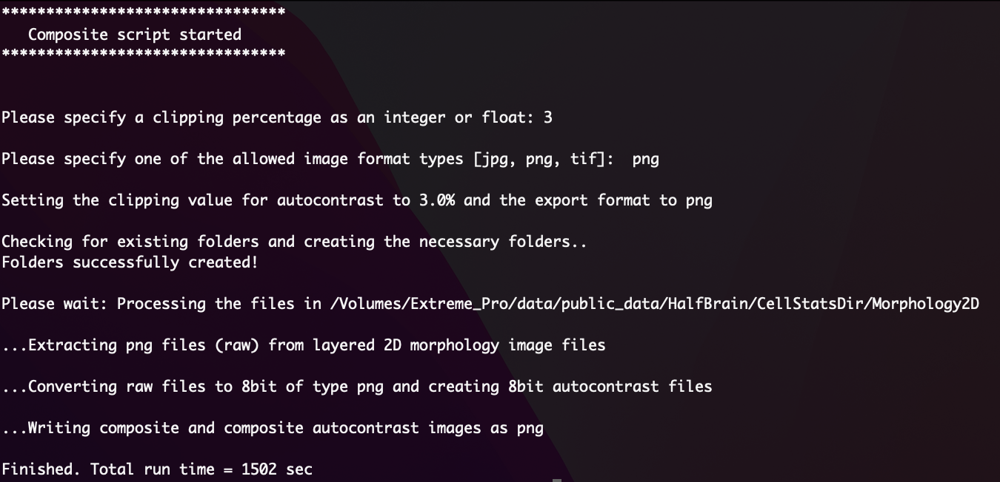

![]()

1 Description
Composite images of CosMx™ Spatial Molecular Imager (SMI) fields of view (FOVs) can be useful when using open-sourced software such as squidpy and giotto. In this post, we describe the make_composite.py script, a developmental python script that creates such composite images from layered morphology 2D images that can be exported from the AtoMx™ Spatial Informatics Portal (SIP). Layered images are extracted from the 2D morphology TIF files and written in a file format selected by the user. The extracted images are converted to 8bit, and composite images are written from these 8bit images.
Note
make_composite.py is a development version. Use at your own risk.
2 Where to find the script?
The script and license can be found in the assets/make-composite folder of the repository.
3 Required libraries
The script requires the following libraries to be installed:
- Pillow (e.g.,
pip install pillow) - Numpy (e.g.,
pip install numpy)
4 User inputs (required)
clipping(int or float) - Histogram clipping percentage. This value is the percentage of the histogram to clip on the left and right side. The effect changes the contrast of the image. A higher percentage produces more contrast. The user needs to determine the appropriate percentage by testing on a subset of images. The same clipping value is applied to all images. Generally, setting the value between 1 and 3 is a good starting point. Specifying a clipping value of 0 will not alter the histogram. A value is required, there is no default.clippingis a required input.user_format(str) - File format to be written. Options are jpg, png, and tif. All output files will be written in the format specified by the user.user_formatis a required input.
5 Additional inputs (changed within the script)
Variable:
colors= [‘cyan’, ‘red’, ‘yellow’, ‘blue’, ‘magenta’]. The variable is the composite color scheme (not a user input; changeable within the script). The colors are listed in order of channel number (channel 0 to channel 4). Example: Channel 0 is colored ‘cyan’,Variable:
compress_value(set to 3). Lossless file compression value. Higher values produce smaller files at the expense of increased script execution time. The set value is a compromise between file size and execution time.
6 Output
raw– The extracted tif files from the morphology 2D images will be saved in this folder. The file format will follow <fov_num>_ch<#>_raw.<user_format>. <fov_num> is the fov number,ch<#>is the channel number (from 0 to 4), and <user_format> is the specified file type format (see User inputs). Note: If the specifieduser_formatis jpg, the raw files will be 8bit jpg files.Example
F001_ch0_raw.jpg (for user_format = jpg)8bit- The images in the raw_folder are converted to 8bit and saved in this folder. Note: If the specifieduser_formatis jpg, the 8bit files are identical to the raw files. The file format will follow <fov_num>_ch<#>_8bit.<user_format> except whenuser_format= jpgExample
F001_ch0_8bit.tif (for user_format = tif) F001_ch0_raw.jpg (for user_format = jpg)8bit_autocontrast– Images in the 8bit folder are autocontrasted based on the user supplied clipping value. The file format will follow <fov_num>_ch<#>_8bit_autocontrast.<user_format>Example
F001_ch0_8bit_autocontrast.png (for user_format = png)composite- Composite images created from the images in the8bitfolder. The composite type is a screen composite. The file format will follow <fov_num>_composite.<user_format>Example
F001_composite.jpg (for user_format = jpg)composite_autocontrast- Images in the composite_folder are autocontrasted based on the user specified clipping value. The file format will follow <fov_num>_composite_autocontrast.<user_format>Example
F001_composite_autocontrast.png (for user_format = png)
7 Usage
cd to/your/Morphology2D folder
python /path/to/your/make_composite.py # and follow the on-screen promptsRegex pattern matching on 2D morphology file name format is implemented, however, only NanoString 2D morphology files should be present in the folder containing the make_composite script.
8 Example
The example dataset that we used was the mouse coronal hemisphere FFPE dataset that is available to download from NanoString’s website here.
The Morphology2D folder is found within the CellStatsDir folder and has TIF files for each of the 130 FOVs.
# In Terminal
cd /path/to/slide/CellStatsDir/Morphology2D# In Terminal
tree -L 1├── 20230406_205644_S1_C902_P99_N99_F001.TIF
├── 20230406_205644_S1_C902_P99_N99_F002.TIF
...
├── 20230406_205644_S1_C902_P99_N99_F129.TIF
└── 20230406_205644_S1_C902_P99_N99_F130.TIF
Once in the Morphology2D folder, simply run the script and follow the on-screen prompts (Figure 2).
# In Terminal
python /path/to/CosMx-Analysis-Scratch-Space/assets/make-composite/make_composite.py

png. On a Macbook Pro M1, this took about 25 minutes to process 130 FOVs.
When complete, the structure of the Morphology2D folder should resemble this:
# In Terminal
tree -L 1├── 20230406_205644_S1_C902_P99_N99_F001.TIF
├── 20230406_205644_S1_C902_P99_N99_F002.TIF
...
├── 20230406_205644_S1_C902_P99_N99_F129.TIF
├── 20230406_205644_S1_C902_P99_N99_F130.TIF
├── 8bit
├── 8bit_autocontrast
├── composite
├── composite_autocontrast
└── rawThese composite images can now be imported into open-sourced software or explored further.